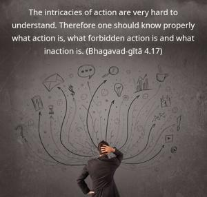
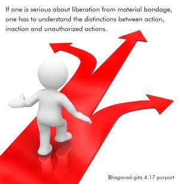

The intricacies of action are very hard to understand. Therefore one should know properly what action is, what forbidden action is and what inaction is.


If one is serious about liberation from material bondage, one has to understand the distinctions between action, inaction and unauthorized actions. One has to apply oneself to such an analysis of action, reaction and perverted actions because it is a very difficult subject matter. To understand Kṛṣṇa consciousness and action according to its modes, one has to learn one’s relationship with the Supreme; i.e., one who has learned perfectly knows that every living entity is an eternal servitor of the Lord and that consequently one has to act in Kṛṣṇa consciousness. The entire Bhagavad-gītā is directed toward this conclusion. Any other conclusions against this consciousness and its attendant actions are vikarmas, or prohibited actions. To understand all this one has to associate with authorities in Kṛṣṇa consciousness and learn the secret from them; this is as good as learning from the Lord directly. Otherwise, even the most intelligent persons will be bewildered.